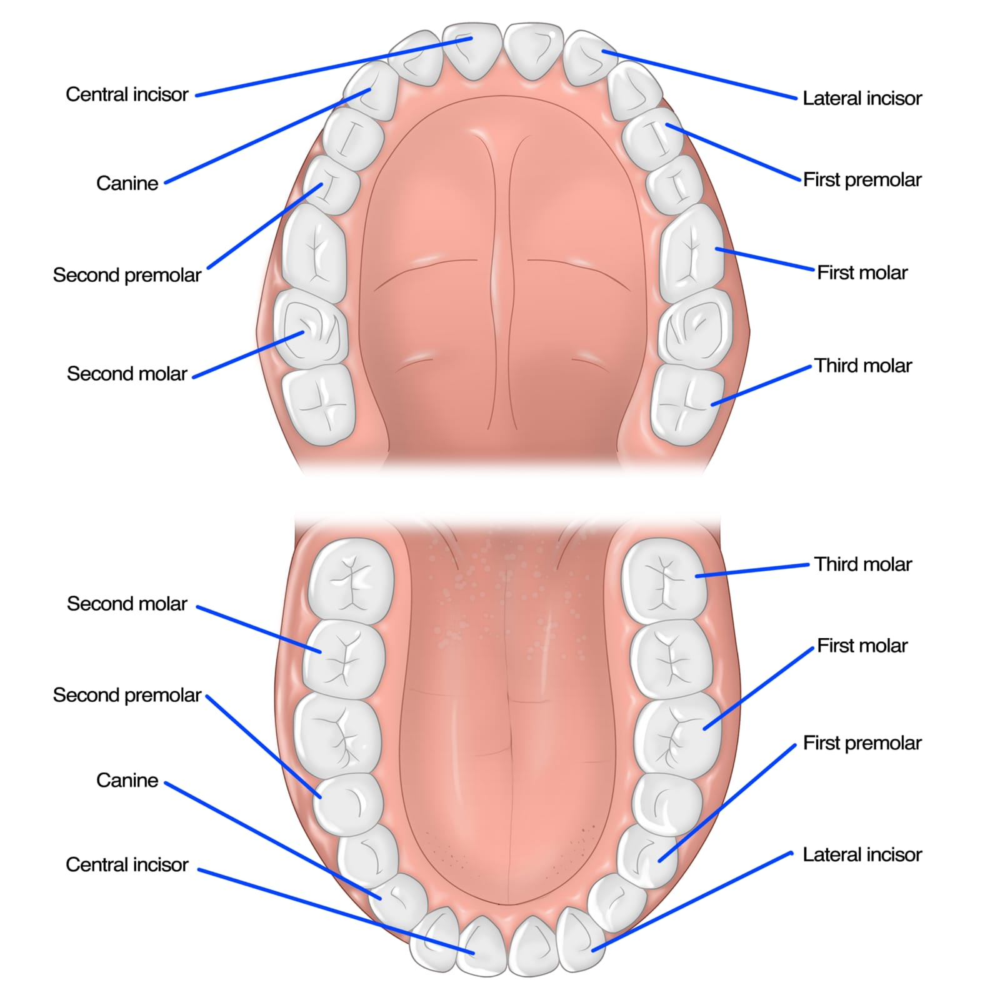

Oral health is often an overlooked part of overall health, in most cases people will go to a dentist when they have a tooth ache but what they do not know is that the oral health status can affect the entire body and most often than none systemic diseases can manifest in the oral cavity. It is very important that people understand the importance of maintaining good oral hygiene and that it goes beyond brushing. Having good oral health also requires a good diet, good eating habits and avoiding toxins like alchohol and tobacco (e.g vaping, ciggarates and pouches)
Click the picture to see the tooth brushing guide for each area:

Its important to remember that when it comes to oral health prevention is better that cure so if you have periodontal disease get in contact with or visit your dentist for a required bi-annual visit to ensure that you do not develop any severe oral health conditions.